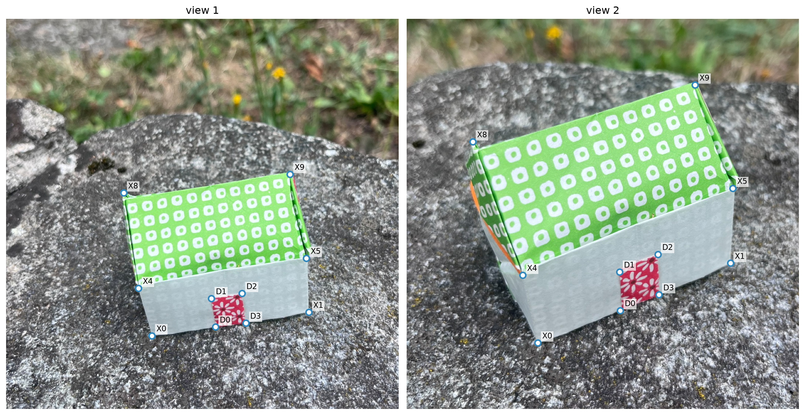
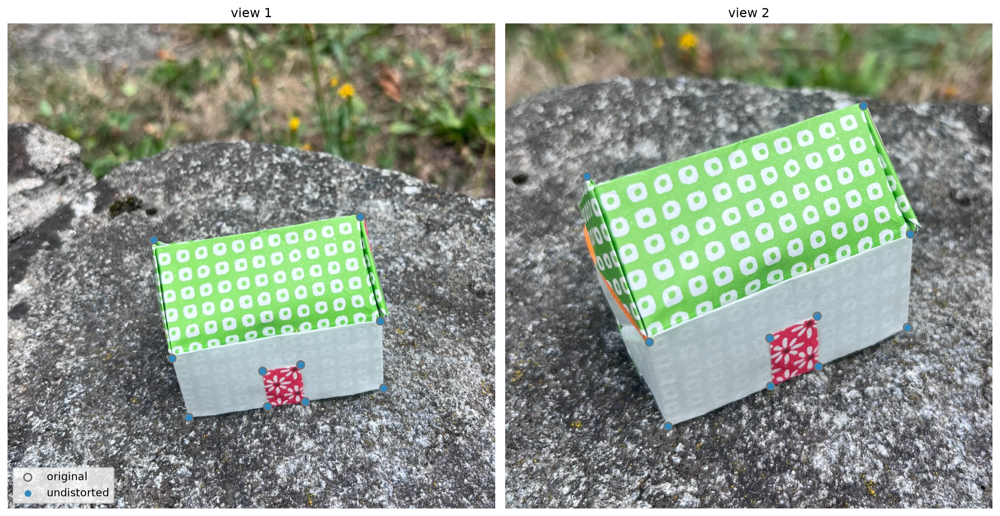
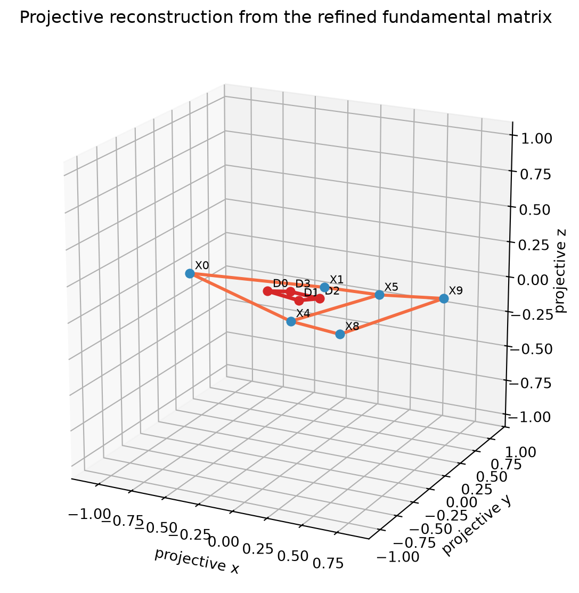
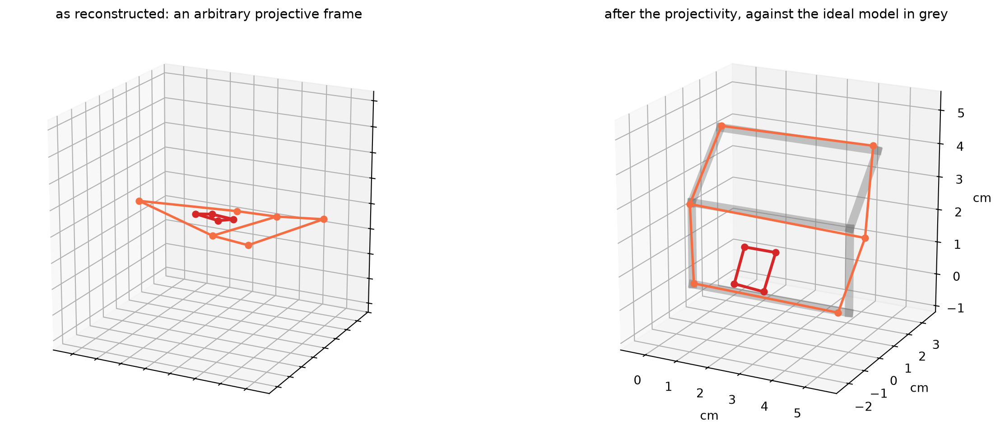
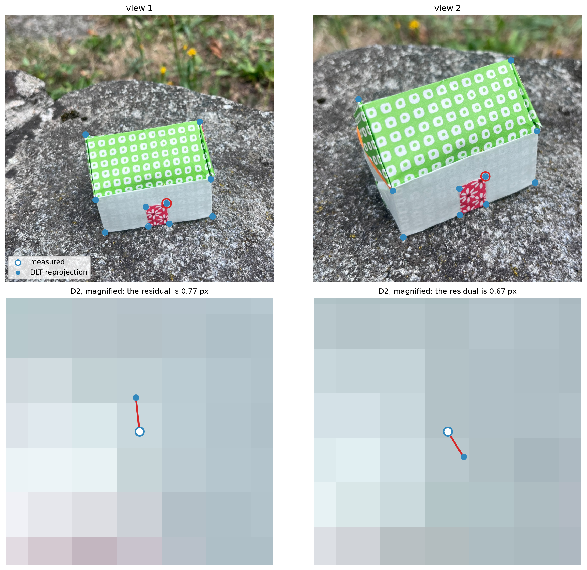
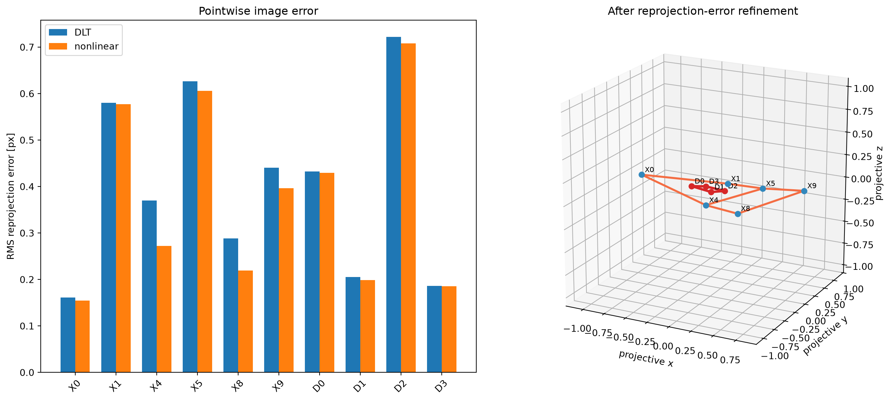
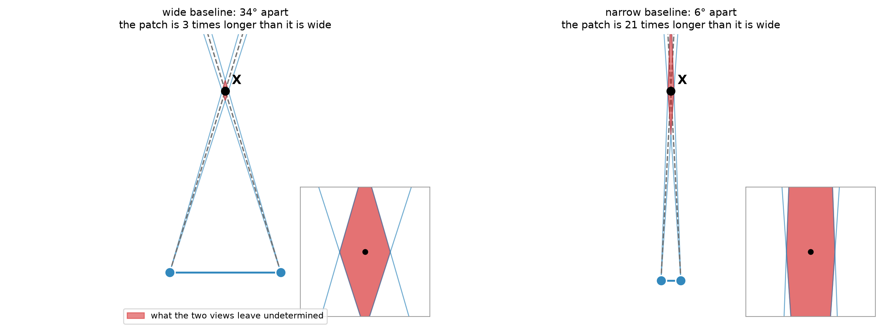
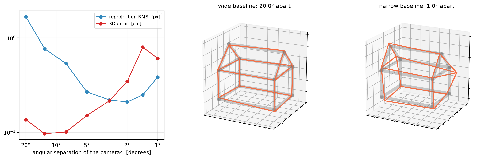

Projective structure from two views
In this notebook we will build our first 3D reconstruction from real images.
Starting from a pair of cameras and a set of corresponding image points, we will introduce DLT triangulation to recover the 3D points that generated those observations. As in the previous fitting problems, the linear solution will only be our starting point: we will then measure a geometrically meaningful quantity — the reprojection error — and use it to refine the reconstructed points.
Our scene is the familiar Origami House, but we should already adjust our expectations a little.
First, with only two images we can reconstruct only the points that are visible and matched in both views. In our case, this means just a handful of vertices on the visible part of the house, together with the four corners of the small door. We are therefore building a super sparse reconstruction.
Second, our cameras come from the fundamental matrix and are not calibrated. The resulting reconstruction will therefore be determined only up to a 3D projective transformation. The reconstructed house may consequently look rather different from the neat Euclidean object we have in mind: lengths, angles, and parallelism are not yet part of the geometry we have recovered.
Our input
The ten correspondences are real noisy image measurements. Six labels, \(X_0,X_1,X_4,X_5,X_8,X_9\), belong to the structural wireframe of the Origami House. The four labels \(D_0,\ldots,D_3\) are the corners of the door.
Preprocessing
To improve the results slightly, before starting our analysis we undistort the images, so that from this point on we can assume a pinhole camera model
# The lens distorsion parameters are already stored with the Origami House data. They have been estimated using COLMAP using a hundred of images.
with open(ROOT / "data/dojo_house/annotations/triangulation.json") as f:
camera_data = json.load(f)
cam = camera_data["camera"]
f, cx, cy, k1 = cam["f"], cam["cx"], cam["cy"], cam["k1"]
scale = camera_data["display_to_colmap_mapping"]["uniform_scale"]
def display_to_colmap(xy):
"""Displayed clockwise-rotated JPEG -> original COLMAP pixel coordinates."""
u, v = np.asarray(xy, float)
return np.array([scale * v, scale * (W_IMG - u)])
def colmap_to_display(xy):
"""Original COLMAP pixel coordinates -> displayed JPEG coordinates."""
u, v = np.asarray(xy, float)
return np.array([W_IMG - v / scale, u / scale])
def undistort_display_point(xy):
"""Invert COLMAP SIMPLE_RADIAL, but return an undistorted DISPLAY-pixel point."""
ud, vd = display_to_colmap(xy)
xd, yd = (ud - cx) / f, (vd - cy) / f
x, y = xd, yd
for _ in range(12):
fac = 1.0 + k1 * (x*x + y*y)
x, y = xd / fac, yd / fac
uu, vu = f*x + cx, f*y + cy
return colmap_to_display([uu, vu])
def undistort_points(x):
return h(np.array([undistort_display_point(p[:2]) for p in x]))
x = undistort_points(x_raw)
xp = undistort_points(xp_raw)
shift = np.r_[np.linalg.norm(x[:,:2]-x_raw[:,:2], axis=1),
np.linalg.norm(xp[:,:2]-xp_raw[:,:2], axis=1)]
print(f"maximum radial correction: {shift.max():.2f} px")
print(f"median radial correction: {np.median(shift):.2f} px")maximum radial correction: 0.46 px
median radial correction: 0.16 px
Recover the epipolar geometry
We now repeat, compactly, the fundamental-matrix estimation pipeline, from DLT to non-linear refinement.
- Hartley-normalize the undistorted correspondences;
- estimate \(\mathsf F\) with the normalized eight-point algorithm and enforce rank two;
- use that result to initialize a nonlinear minimization of the Sampson residual.
The refined matrix is the object we carry into reconstruction.
def normalize_points(x):
c = x[:, :2].mean(axis=0)
d = np.linalg.norm(x[:, :2] - c, axis=1).mean()
s = np.sqrt(2.0) / d
T = np.array([[s, 0, -s*c[0]], [0, s, -s*c[1]], [0, 0, 1.0]])
return (T @ x.T).T, T
def design_matrix(x, xp):
u, v = x[:,0], x[:,1]
up, vp = xp[:,0], xp[:,1]
return np.column_stack([up*u, up*v, up,
vp*u, vp*v, vp,
u, v, np.ones(len(x))])
def eight_point(x, xp):
xn, T = normalize_points(x)
xpn, Tp = normalize_points(xp)
Fh = np.linalg.svd(design_matrix(xn, xpn))[2][-1].reshape(3,3)
U, s, Vt = np.linalg.svd(Fh)
s[-1] = 0.0
Fh = U @ np.diag(s) @ Vt
F = Tp.T @ Fh @ T
return F / np.linalg.norm(F)
def sampson_residual(F, x, xp):
Fx = (F @ x.T).T
Ftxp = (F.T @ xp.T).T
C = np.sum(xp * Fx, axis=1)
den = Fx[:,0]**2 + Fx[:,1]**2 + Ftxp[:,0]**2 + Ftxp[:,1]**2
return C / np.sqrt(np.maximum(den, 1e-15))
def rodrigues(w):
th = np.linalg.norm(w)
if th < 1e-12:
return np.eye(3)
K = skew(w / th)
return np.eye(3) + np.sin(th)*K + (1-np.cos(th))*(K@K)
def log_SO3(R):
c = np.clip((np.trace(R)-1)/2, -1.0, 1.0)
th = np.arccos(c)
if th < 1e-9:
return np.zeros(3)
w = np.array([R[2,1]-R[1,2], R[0,2]-R[2,0], R[1,0]-R[0,1]])
return th * w / (2*np.sin(th))
def F_from_params(p):
U, V = rodrigues(p[:3]), rodrigues(p[3:6])
q = np.clip(p[6], -30, 30)
s = 1.0 / (1.0 + np.exp(-q))
return U @ np.diag([1.0, s, 0.0]) @ V.T
def params_from_F(F):
U, s, Vt = np.linalg.svd(F)
if np.linalg.det(U) < 0:
U[:,2] *= -1
if np.linalg.det(Vt) < 0:
Vt[2,:] *= -1
ratio = np.clip(s[1] / s[0], 1e-6, 1-1e-6)
q = np.log(ratio / (1-ratio))
return np.r_[log_SO3(U), log_SO3(Vt.T), q]
def refine_sampson(F0, x, xp):
p0 = params_from_F(F0)
opt = least_squares(lambda p: sampson_residual(F_from_params(p), x, xp),
p0, method="lm", xtol=1e-12, ftol=1e-12,
gtol=1e-12, max_nfev=5000)
F = F_from_params(opt.x)
return F / np.linalg.norm(F), opt
def rms(v):
v = np.asarray(v, float)
return float(np.sqrt(np.mean(v*v)))
F_dlt = eight_point(x, xp)
F, optF = refine_sampson(F_dlt, x, xp)
print(f"Sampson RMS, DLT: {rms(sampson_residual(F_dlt, x, xp)):.3f} px")
print(f"Sampson RMS, refined: {rms(sampson_residual(F, x, xp)):.3f} px")
print("rank(F) =", np.linalg.matrix_rank(F))Sampson RMS, DLT: 10.806 px
Sampson RMS, refined: 0.594 px
rank(F) = 2Recovery of a pair of projective cameras
Since the fundamental matrix does not determine a unique physical stereo rig, it cannot recover a unique pair of Euclidean cameras. Instead, it determines a pair of cameras only up to a 3D projective transformation. For our purposes, we can therefore choose a convenient canonical projective realization.
We fix the world reference frame by choosing the first camera as
\[ \mathsf P=[I\mid\mathbf 0]. \]
If \(\mathbf e'\) denotes the epipole in the second image, a compatible second camera is
\[ \mathsf P' = \left[ [\mathbf e']_\times \mathsf F \;\middle|\; \mathbf e' \right]. \]
This canonical pair reproduces exactly the epipolar geometry encoded by \(\mathsf F\). However, these cameras should not be interpreted as the physical Euclidean cameras \(K[R\mid t]\) that acquired the images. Consequently, the 3D coordinates defined by this reconstruction are projective coordinates, rather than Euclidean ones.
def canonical_cameras(F):
U, _, _ = np.linalg.svd(F)
ep = U[:, -1] # left null vector: e'^T F = 0
ep /= np.linalg.norm(ep)
P = np.c_[np.eye(3), np.zeros(3)]
Pp = np.c_[skew(ep) @ F, ep]
return P, Pp, ep
def unit_F(F):
return F / np.linalg.norm(F)
def F_from_cameras(P, Pp):
C = np.linalg.svd(P)[2][-1]
ep = Pp @ C
Fc = skew(ep) @ Pp @ np.linalg.pinv(P)
return unit_F(Fc)
def projective_F_distance(F1, F2):
A, B = unit_F(F1), unit_F(F2)
return min(np.linalg.norm(A-B), np.linalg.norm(A+B))
P, Pp, ep = canonical_cameras(F)
F_check = F_from_cameras(P, Pp)
print("epipole in view 2 ~", np.round(ep, 4))
print("distance between input F and F induced by (P,P'):",
f"{projective_F_distance(F, F_check):.2e}")epipole in view 2 ~ [0.2464 0.9692 0.0006]
distance between input F and F induced by (P,P'): 2.03e-18Triangulation with DLT
Now that we have recovered a pair of cameras from the fundamental matrix, we can get to the heart of this notebook: triangulation.
For one correspondence \(\mathbf x \leftrightarrow \mathbf x'\), we seek a homogeneous 3D point \(\widetilde{\mathbf X}\) such that
\[ \lambda \mathbf x = P\widetilde{\mathbf X}, \qquad \lambda' \mathbf x' = P'\widetilde{\mathbf X}, \]
where \(\lambda\) and \(\lambda'\) are the unknown depths of the point in the two views.
We can eliminate these unknown scale factors by taking a cross product:
\[ \mathbf x \times P\widetilde{\mathbf X}=0, \qquad \mathbf x' \times P'\widetilde{\mathbf X}=0. \]
Equivalently, using the skew-symmetric matrix associated with the cross product,
\[ [\mathbf x]_\times P\widetilde{\mathbf X}=0, \qquad [\mathbf x']_\times P'\widetilde{\mathbf X}=0. \]
Since a \(3\times3\) cross-product matrix has rank two, each view provides only two independent equations. Writing the rows of \(P\) as \(P_1^\top,P_2^\top,P_3^\top\), and similarly for \(P'\), we obtain the homogeneous linear system
\[ A\widetilde{\mathbf X}=0, \]
with
\[ A= \begin{bmatrix} uP_3^\top-P_1^\top\\ vP_3^\top-P_2^\top\\ u'P_3'^\top-P_1'^\top\\ v'P_3'^\top-P_2'^\top \end{bmatrix}. \]
With perfect measurements, these four equations admit a common solution. With real, noisy correspondences, however, they generally do not. DLT triangulation therefore looks for the unit homogeneous vector that minimizes
\[ \|A\widetilde{\mathbf X}\|, \]
which is simply the right singular vector of \(A\) associated with its smallest singular value.
Notice that nothing in this derivation requires camera calibration. The same construction works for the projective cameras recovered from the fundamental matrix, and therefore produces a projective 3D reconstruction.
def triangulate_dlt(P, Pp, x, xp):
u, v = x[:2]
up, vp = xp[:2]
A = np.vstack([
u * P[2] - P[0],
v * P[2] - P[1],
up * Pp[2] - Pp[0],
vp * Pp[2] - Pp[1],
])
# Row scaling changes the algebraic weighting but not the exact equations;
# it keeps the small 4x4 system numerically better balanced in pixel coordinates.
A = A / np.maximum(np.linalg.norm(A, axis=1, keepdims=True), 1e-15)
_, _, Vt = np.linalg.svd(A)
Xh = Vt[-1]
return Xh / np.linalg.norm(Xh), A
X_dlt = {}
for k, xi, xpi in zip(rid, x, xp):
Xh, _ = triangulate_dlt(P, Pp, xi, xpi)
X_dlt[k] = Xh
print("one homogeneous reconstructed point:")
print("X9 ~", np.round(X_dlt["X9"], 5))one homogeneous reconstructed point:
X9 ~ [-0.6242 -0.7813 -0.0007 0.0015]The first 3D reconstruction
To make the reconstruction easier to visualize, we connect the reconstructed vertices using the connectivity of the Origami House model. In other words, the model only tells us which points should be connected. The 3D coordinates shown below are entirely those obtained from triangulation.
Do not expect the reconstructed house to look perfectly regular. There are two reasons for this. First, we are reconstructing a real origami model, which was not folded with perfect geometric accuracy. More importantly, even if the physical house had been perfectly constructed, our reconstruction would still be determined only up to a 3D projective transformation. Angles, lengths, parallelism, and the overall shape are therefore not expected to be preserved.
To make the result a little easier to inspect, we apply a simple 3D similarity transformation: we center the reconstructed points, use PCA to choose a convenient orientation, and apply a uniform scale.
This does not change the nature of the reconstruction. A similarity is itself a projective transformation, and the composition of two projective transformations is still a projective transformation. So do not be alarmed by what comes next: we do not expect to get the 3D origami house that our “euclidean eyes” are used to see.
def dehom(Xh):
Xh = np.asarray(Xh, float)
return Xh[:3] / Xh[3]
def plotting_similarity(Xdict):
Q = np.vstack([dehom(Xdict[k]) for k in rid])
c = Q.mean(axis=0)
_, _, Vt = np.linalg.svd(Q - c, full_matrices=False)
R = Vt.copy()
if np.linalg.det(R) < 0:
R[-1] *= -1
Y = (R @ (Q-c).T).T
s = np.max(np.linalg.norm(Y, axis=1))
return c, R, max(s, 1e-12)
def apply_plot_similarity(Xdict, sim):
c, R, s = sim
return {k: R @ (dehom(Xdict[k])-c) / s for k in Xdict}
def draw_wireframe(ax, Xdict, labels_on=True):
house_edges = [(a,b) for a,b in EDGES if a in Xdict and b in Xdict]
door_edges = [("D0","D1"), ("D1","D2"), ("D2","D3"), ("D3","D0")]
for a,b in house_edges:
q = np.vstack([Xdict[a], Xdict[b]])
ax.plot(q[:,0], q[:,1], q[:,2], color=ACCENT, lw=2.2)
for a,b in door_edges:
if a in Xdict and b in Xdict:
q = np.vstack([Xdict[a], Xdict[b]])
ax.plot(q[:,0], q[:,1], q[:,2], color=DOOR, lw=2.6)
for k,p in Xdict.items():
col = DOOR if k.startswith("D") else BLUE
ax.scatter(*p, s=34, color=col)
if labels_on:
ax.text(*(p + np.array([.025,.025,.025])), k, fontsize=8)
def set_axes_equal(ax, pad=.08):
lim = np.array([ax.get_xlim3d(), ax.get_ylim3d(), ax.get_zlim3d()], float)
cen = lim.mean(axis=1)
rad = .5*np.max(lim[:,1]-lim[:,0])*(1+pad)
ax.set_xlim(cen[0]-rad, cen[0]+rad)
ax.set_ylim(cen[1]-rad, cen[1]+rad)
ax.set_zlim(cen[2]-rad, cen[2]+rad)
ax.set_box_aspect((1,1,1))
plot_sim = plotting_similarity(X_dlt)
Xd = apply_plot_similarity(X_dlt, plot_sim)
fig = plt.figure(figsize=(9,7))
ax = fig.add_subplot(111, projection="3d")
draw_wireframe(ax, Xd)
ax.set_xlabel("projective x")
ax.set_ylabel("projective y")
ax.set_zlabel("projective z")
ax.set_title("Projective reconstruction from the refined fundamental matrix")
ax.view_init(elev=19, azim=-63)
set_axes_equal(ax)
plt.show()
Projective structure
What we have recovered is not a Euclidean model of the Origami House, but a projective reconstruction:
The scene is reconstructed up to a projective transformation of the world. This ambiguity is not a numerical artifact of the triangulation. It is intrinsic to uncalibrated two-view geometry.
Indeed, let \(H\) be any invertible \(4\times4\) matrix. If we transform the reconstructed points and cameras as
\[ \widetilde{\mathbf X}_i' = H\widetilde{\mathbf X}_i, \qquad P_j' = P_jH^{-1}, \]
their image projections do not change:
\[ P_j'\widetilde{\mathbf X}_i' = P_jH^{-1}H\widetilde{\mathbf X}_i = P_j\widetilde{\mathbf X}_i. \]
Therefore, infinitely many different-looking 3D reconstructions are perfectly compatible with exactly the same image measurements.
What survives this ambiguity is projective geometry: incidence relations are preserved, so points remain on the corresponding lines and edges still meet at the same vertices. Euclidean properties, however, are not available yet: lengths, angles, parallelism, and physical camera baselines are not preserved by a general projective transformation.
So the somewhat distorted house we obtained above is a representative of the whole family of projectively equivalent reconstructions.
A glimpse of Euclidean structure
Somewhere in this family of projectively equivalent reconstruction there is also a reconstruction expressed in the Euclidean reference frame of the real scene.
In principle, a projective reconstruction can be upgraded to a Euclidean one by finding the appropriate 3D projective transformation \(\mathsf H\). When this transformation is recovered from constraints on the cameras themselves, without relying on a known 3D reference object, the process is termed self-calibration (a.k.a. autocalibration).
Here instead we cheat, and will do something much easier since we happen to know an idealized 3D model of the Origami House. We can therefore look for the projective transformation \(\mathsf H\) that maps our reconstructed vertices as closely as possible onto the corresponding vertices of the ideal model:
\[ \widetilde{\mathbf X}_{\text{ideal}} \sim \mathsf H\widetilde{\mathbf X}_{\text{rec}}. \]
Estimating \(H\) is again a DLT problem, this time in \(\mathbb P^3\). Since two corresponding homogeneous 3D points must be proportional, each point correspondence provides three independent constraints on the \(4\times4\) matrix \(H\).
Again, this is not self-calibration: we are explicitly using a known 3D reference model, whereas genuine self-calibration tries to recover the Euclidean structure from properties of the cameras and images alone. Still, the spirit is similar: we are searching within the family of projectively equivalent reconstructions for one that looks more Euclidean.
def homography_3d(Xa, Xb):
"""The 4x4 projectivity taking each Xa onto the corresponding Xb.
Both sets are homogeneous 4-vectors. Each correspondence gives three
independent equations, from the fact that Xb and H Xa must be *proportional*
rather than equal — so we ask their cross products to vanish, pair of
coordinates by pair of coordinates.
"""
rows = []
for a, b in zip(np.asarray(Xa, float), np.asarray(Xb, float)):
for i, j in ((0, 3), (1, 3), (2, 3)):
r = np.zeros(16)
r[4*i:4*i+4] = b[j] * a
r[4*j:4*j+4] = -b[i] * a
rows.append(r)
H = np.linalg.svd(np.array(rows))[2][-1].reshape(4, 4)
return H / np.linalg.norm(H)
# the ideal model, for comparison only — it plays no part in the reconstruction
V3 = {k: np.array(v, float) for k, v in model["vertices"].items()}
shared = [k for k in rid if k in V3]
# Fifteen parameters, three equations per point: with ten vertices the fit is
# comfortably overdetermined. It is worth knowing that fewer would not do — see
# the questions at the end.
Hp = homography_3d(np.array([X_dlt[k] for k in shared]),
np.array([np.append(V3[k], 1.0) for k in shared]))
X_metric = {k: Hp @ X_dlt[k] for k in rid}
res = np.array([np.linalg.norm(dehom(X_metric[k]) - V3[k]) for k in shared])
print(f"the projectivity was fitted on all {len(shared)} house vertices\n")
print(f" distance from the ideal model: {res.mean():.3f} cm on average, "
f"{res.max():.3f} cm at worst")
print(f"\nfor scale, the house is {np.ptp(np.array(list(V3.values())), axis=0).round(1)} cm")the projectivity was fitted on all 6 house vertices
distance from the ideal model: 0.340 cm on average, 0.713 cm at worst
for scale, the house is [5. 3.5 4.3] cm
Same images, “different” 3D worlds
We can now make the projective ambiguity completely explicit.
If at the same time we transform the cameras by the corresponding inverse transformation,
\[ P_j' = P_jH^{-1}, \]
then the image projections remain exactly the same:
\[ P_j'\widetilde{\mathbf X}_i' = P_jH^{-1}H\widetilde{\mathbf X}_i = P_j\widetilde{\mathbf X}_i. \]
So we may change the 3D shape of the reconstruction, provided that we transform the cameras consistently, and nothing changes in the images.
This is the key point behind projective ambiguity: from the two images alone, there is no way to distinguish between these different 3D descriptions. They are all equally valid reconstructions of the same image measurements.
Let us use the projectivity \(H\) estimated above, transform both the reconstructed points and the cameras, and reproject everything back into the two images. If the reasoning is correct, the projected points should fall in exactly the same locations as before.
def project_point(Pj, Xh):
q = Pj @ Xh
return q[:2] / q[2]
# Undo the projectivity on the cameras instead of the points, and the images
# cannot tell the difference: P H^-1 . H X = P X.
Hinv = np.linalg.inv(Hp)
P_metric, Pp_metric = P @ Hinv, Pp @ Hinv
before = np.array([[np.linalg.norm(project_point(P, X_dlt[k]) - xi[:2]),
np.linalg.norm(project_point(Pp, X_dlt[k]) - xpi[:2])]
for k, xi, xpi in zip(rid, x, xp)])
after = np.array([[np.linalg.norm(project_point(P_metric, X_metric[k]) - xi[:2]),
np.linalg.norm(project_point(Pp_metric, X_metric[k]) - xpi[:2])]
for k, xi, xpi in zip(rid, x, xp)])
print(f"reprojection RMS before the change of frame: {np.sqrt((before**2).mean()):.4f} px")
print(f"reprojection RMS after the change of frame: {np.sqrt((after**2).mean()):.4f} px")
print(f"largest difference between the two: {np.abs(before - after).max():.2e} px")reprojection RMS before the change of frame: 0.4421 px
reprojection RMS after the change of frame: 0.4421 px
largest difference between the two: 6.60e-13 pxReprojection error
As usual, an algebraic error should be accompanied by a quantity with a clear geometric meaning.
DLT triangulation minimizes the algebraic residual
\[ \|A\widetilde{\mathbf X}\|, \]
but this quantity does not have a direct interpretation in the images. A more natural way to assess the quality of a reconstructed point is to project it back into both views and compare the reprojections with the measured image points.
For one reconstructed point, we define the reprojection error
\[ E(\widetilde{\mathbf X})= \left\|\mathbf x-\pi(P\widetilde{\mathbf X})\right\|^2+ \left\|\mathbf x'-\pi(P'\widetilde{\mathbf X})\right\|^2, \]
where \(\pi\) denotes dehomogenization.
Unlike the algebraic DLT residual, this error has an immediate geometric interpretation: it measures, in pixels, how far the reconstructed 3D point reprojects from the observed correspondence in the two images.
Notice that this criterion remains perfectly meaningful even though our 3D reconstruction is only projective. The distances are measured in the undistorted image planes, not in the reconstructed 3D space.
def project_point(P, Xh):
q = P @ Xh
return q[:2] / q[2]
def reprojection_errors(Xdict):
e1, e2 = [], []
for k, xi, xpi in zip(rid, x, xp):
Xh = Xdict[k]
e1.append(np.linalg.norm(project_point(P, Xh) - xi[:2]))
e2.append(np.linalg.norm(project_point(Pp, Xh) - xpi[:2]))
return np.asarray(e1), np.asarray(e2)
def reprojection_rms(Xdict):
e1, e2 = reprojection_errors(Xdict)
return float(np.sqrt(np.mean(np.r_[e1**2, e2**2])))
e1_dlt, e2_dlt = reprojection_errors(X_dlt)
print(f"DLT reprojection RMS over the 20 image observations: {reprojection_rms(X_dlt):.3f} px")
print(f"largest one-view reprojection error: {max(e1_dlt.max(), e2_dlt.max()):.3f} px")DLT reprojection RMS over the 20 image observations: 0.442 px
largest one-view reprojection error: 0.768 px
Geometric refinement
Now that we have a geometric error, we can also use it to refine the triangulated points.
The DLT solution provides a convenient initial estimate. Keeping the two cameras fixed, we refine each reconstructed point independently by minimizing its reprojection error:
\[ \min_{\widetilde{\mathbf X}_i} \left\|\mathbf x_i-\pi(P\widetilde{\mathbf X}_i)\right\|^2 + \left\|\mathbf x_i'-\pi(P'\widetilde{\mathbf X}_i)\right\|^2. \]
We initialize the optimization with the DLT solution and optimize the three inhomogeneous coordinates of the point in the current projective frame.
In this way, DLT plays its usual role as a linear initialization, while the final estimate is obtained by minimizing a quantity with a direct geometric meaning in the images.
Since the cameras are fixed, each 3D point can be refined independently of all the others.
def refine_triangulation(Xh0, P, Pp, x, xp):
X0 = dehom(Xh0)
def residual(X):
Xh = np.r_[X, 1.0]
return np.r_[project_point(P, Xh) - x[:2],
project_point(Pp, Xh) - xp[:2]]
opt = least_squares(residual, X0, method="lm",
xtol=1e-12, ftol=1e-12, gtol=1e-12,
max_nfev=2000)
Xh = np.r_[opt.x, 1.0]
return Xh / np.linalg.norm(Xh), opt
X_refined = {}
for k, xi, xpi in zip(rid, x, xp):
X_refined[k], _ = refine_triangulation(X_dlt[k], P, Pp, xi, xpi)
print(f"DLT reprojection RMS: {reprojection_rms(X_dlt):.4f} px")
print(f"nonlinear reprojection RMS: {reprojection_rms(X_refined):.4f} px")DLT reprojection RMS: 0.4421 px
nonlinear reprojection RMS: 0.4200 px
A geometric-algebraic aside: optimal triangulation
There is another way to look at the refinement above.
As you know, a noisy correspondence \((\widetilde{\mathbf x},\widetilde{\mathbf x}')\) does not, in general, satisfy the epipolar constraint exactly. Optimal two-view triangulation asks for the closest corrected correspondence \((\mathbf x,\mathbf x')\) that does:
\[ \min_{\mathbf x,\mathbf x'} \|\mathbf x-\widetilde{\mathbf x}\|^2 + \|\mathbf x'-\widetilde{\mathbf x}'\|^2 \qquad \text{subject to} \qquad \mathbf x'^\top F\mathbf x=0. \]
Geometrically, we are projecting the noisy measurement onto the set of image correspondences that can actually arise from a common 3D point.
This also gives a useful perspective on the different approximations we have encountered:
- DLT triangulation minimizes an algebraic residual;
- Sampson correction replaces the epipolar constraint by its first-order approximation around the measurement to estimate the fundamental matrix;
- optimal triangulation minimizes the true geometric distance to the epipolar variety.
The last problem is genuinely nonlinear. In fact, for a generic two-view configuration it has six complex critical points. In algebraic geometry, this number is an instance of the Euclidean distance degree (ED degree): it measures the algebraic complexity of finding the nearest point on a variety.
Our nonlinear reprojection refinement approaches the same geometric problem from the 3D side: instead of correcting the two image points explicitly, we parametrize consistent correspondences through a 3D point \(\mathbf X\) and minimize
\[ \|\widetilde{\mathbf x}-\pi(P\mathbf X)\|^2+ \|\widetilde{\mathbf x}'-\pi(P'\mathbf X)\|^2. \]
Baseline and triangulation accuracy
So far, our reconstruction has been judged mainly through the reprojection error, which turned out to be comfortably small. But does a small error in the images necessarily imply an accurate reconstruction in 3D?
Not quite. Triangulation also depends strongly on the geometry of the two views, and in particular on the distance between the cameras: the baseline.
To isolate this effect, we now switch to a synthetic experiment. We place the ideal Origami House in front of two virtual cameras, project its vertices, add the same amount of image noise to every experiment, and reconstruct the scene while progressively reducing the baseline.
Here we know the exact 3D structure, so we can directly compare the reconstruction with the ground truth. Moreover, the house is perfectly regular by construction: if the recovered 3D geometry deteriorates, we cannot blame the folding this time.
The intuition is simple. As the cameras move closer together, the two viewing rays corresponding to the same 3D point become increasingly similar. Their intersection is then much less constrained: a small displacement in the image can produce a large displacement along depth.
In other words, the same image noise can lead to very different 3D errors depending on the baseline.
Let us see this happen.
def synthetic_pair(baseline_deg, sigma=0.5, seed=0, f=3187.6, W=4032, H=3024):
"""Two virtual cameras looking at the ideal house from an angular separation
of baseline_deg, with Gaussian pixel noise on the projections."""
rng = np.random.default_rng(seed)
V = np.array([V3[k] for k in HOUSE_IDS])
ctr, dist = V.mean(axis=0), 40.0
def camera(az):
el = np.deg2rad(28.0)
Cc = ctr + dist*np.array([np.cos(el)*np.cos(np.deg2rad(az)),
np.cos(el)*np.sin(np.deg2rad(az)),
np.sin(el)])
z = ctr - Cc; z /= np.linalg.norm(z)
xa = np.cross([0., 0., -1.], z); xa /= np.linalg.norm(xa)
R = np.vstack([xa, np.cross(z, xa), z])
K = np.array([[f, 0, W/2], [0, f, H/2], [0, 0, 1.]])
return K @ np.hstack([R, (-R @ Cc).reshape(3, 1)]), Cc
Pa, Ca = camera(-90 - baseline_deg/2)
Pb, Cb = camera(-90 + baseline_deg/2)
pr = lambda M: (lambda q: q[:, :2]/q[:, 2:3])(np.c_[V, np.ones(len(V))] @ M.T)
a = h(pr(Pa) + rng.normal(0, sigma, (len(V), 2)))
b = h(pr(Pb) + rng.normal(0, sigma, (len(V), 2)))
return a, b, np.linalg.norm(Ca - Cb)
def run_pipeline(a, b):
"""The whole notebook, from correspondences to a metric comparison."""
Fs = refine_sampson(eight_point(a, b), a, b)
Fs = Fs[0] if isinstance(Fs, tuple) else Fs
Pa, Pb, _ = canonical_cameras(Fs)
Xs = {k: triangulate_dlt(Pa, Pb, ai, bi)[0]
for k, ai, bi in zip(HOUSE_IDS, a, b)}
rms = np.sqrt(np.mean([np.linalg.norm(project_point(M, Xs[k]) - q[:2])**2
for M, obs in ((Pa, a), (Pb, b))
for k, q in zip(HOUSE_IDS, obs)]))
Hp = homography_3d(np.array([Xs[k] for k in HOUSE_IDS]),
np.array([np.append(V3[k], 1.0) for k in HOUSE_IDS]))
err = np.mean([np.linalg.norm(dehom(Hp @ Xs[k]) - V3[k]) for k in HOUSE_IDS])
return rms, err, {k: dehom(Hp @ Xs[k]) for k in HOUSE_IDS}, Xs
HOUSE_IDS = [k for k in V3]
angles = np.array([20, 13, 8, 5, 3, 2, 1.4, 1.0])
N_TRIALS = 7 # one draw of noise says very little
rows = []
for ang in angles:
trials = [run_pipeline(*synthetic_pair(ang, seed=s)[:2])[:2]
for s in range(N_TRIALS)]
r, e = np.median(np.array(trials), axis=0)
rows.append((ang, r, e))
print(f"{'separation':>12s}{'reprojection RMS':>19s}{'3D error':>21s}")
for ang, r, e in rows:
print(f"{ang:11.1f}°{r:19.3f}{e:21.3f}")
print(f"\nmedians over {N_TRIALS} noise draws; pixels and centimetres, "
f"and the house is 5 cm across") separation reprojection RMS 3D error
20.0° 1.679 0.136
13.0° 0.767 0.097
8.0° 0.535 0.101
5.0° 0.268 0.151
3.0° 0.220 0.215
2.0° 0.210 0.346
1.4° 0.249 0.798
1.0° 0.385 0.606
medians over 7 noise draws; pixels and centimetres, and the house is 5 cm acrossBefore running the experiment, it is worth seeing why the angle should matter at all. A measured image point is known only to within a pixel or so, so a camera does not hand us a ray but a thin wedge of rays. The reconstruction is whatever the two wedges have in common — and how big that region is depends entirely on the angle at which they cross.


The two curves move in opposite directions.
As the baseline becomes smaller, the reprojection error decreases, while the 3D reconstruction error grows. The reason is geometric: when the two viewing rays intersect at a very small angle, depth becomes poorly constrained. A reconstructed point can move substantially along depth while producing only a tiny change in its image projections.
Therefore, a small reprojection error does not necessarily imply an accurate 3D reconstruction. It only tells us that the reconstructed point is consistent with the image measurements. When the triangulation angle is small, this consistency is relatively easy to achieve even for a poorly localized 3D point.
This suggests that larger baselines are preferable for triangulation — but only up to a point. As the viewpoint separation increases, the two images typically share a smaller common field of view, more points become occluded, and finding reliable correspondences becomes harder. The resulting reconstruction may therefore be more accurate for the points that can be triangulated, but also sparser and less complete.
In practice, there is a trade-off: we would like a baseline large enough to provide a healthy triangulation angle, but not so large that the overlap between the two views becomes too small.
This is why a structure-from-motion pipeline should not judge a triangulated point from reprojection error alone. The geometry of the views and their overlap both matter.
Questions to leave open
The projectivity was fitted on six vertices and checked on four. Why not five? Fifteen degrees of freedom, three equations per point — five ought to be exactly enough. Try it and watch it fail, then look at which five were drawn: among the ten vertices of the house there are twenty-four coplanar quadruples, and four coplanar points leave a three-dimensional homography undetermined.
Everything was measured on the same ten points that produced it. They estimated \(\mathsf F\), they defined the cameras, they were triangulated, and then they reported the reprojection error. What would it take to obtain a number that measures accuracy rather than fit?
Nonlinear refinement lowered the reprojection RMS by about a tenth of a pixel. On ten hand-clicked points, is that a better reconstruction or a closer fit to the annotation noise? What experiment would tell the two apart?
The reconstruction is fixed up to fifteen degrees of freedom, and a rigid motion with a scale accounts for seven of them. The remaining eight are the distance between a projective and a metric reconstruction. What would we need to know — about the scene, or about the cameras — to spend them?
Further reading
- Hartley, R. and Zisserman, A. Multiple View Geometry in Computer Vision, 2nd ed., Cambridge University Press, 2004. Chapter 9 for projective camera recovery from \(\mathsf F\) and Chapter 12 for triangulation.
- The same book develops optimal two-view triangulation and bundle adjustment as geometric least-squares problems. The nonlinear point refinement above is the small, two-view version of that general reprojection-error principle.
- Hartley, R. I. and Sturm, P. Triangulation. Computer Vision and Image Understanding, 68(2):146–157, 1997.
The classical reference for optimal two-view triangulation: instead of minimizing the algebraic DLT residual, the measured image points are corrected so as to minimize their geometric displacement while satisfying the epipolar constraint exactly. - Rydell, F., Bökman, G., Kahl, F. and Kohn, K. A Framework for Reducing the Complexity of Geometric Vision Problems and its Application to Two-View Triangulation with Approximation Bounds. International Conference on 3D Vision (3DV), 2026.
The standard two-view geometric triangulation problem has generically six complex critical points. This work shows that, by modifying the image-space metric through suitable weights, the algebraic complexity can be reduced in the two-view case, from six critical points to two.